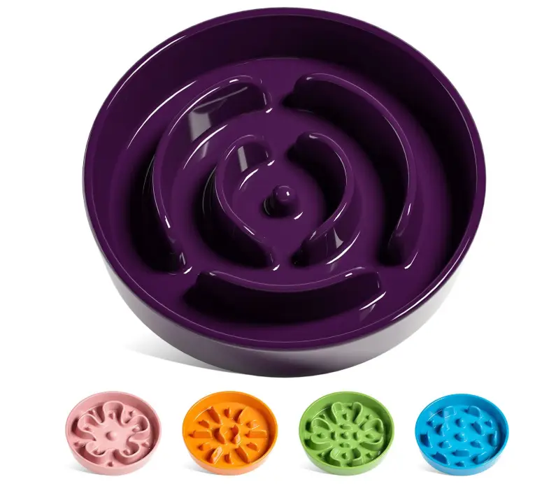
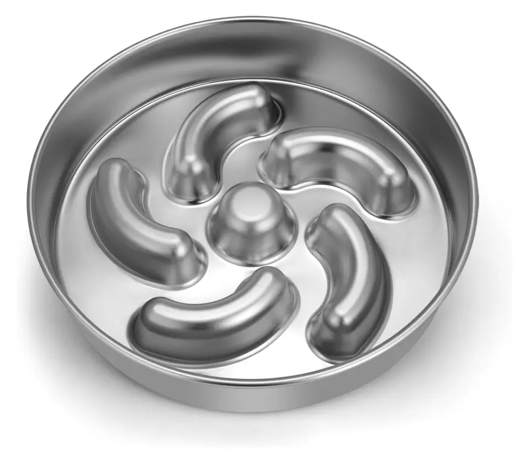

The slow feeder category now spans three main materials: silicone, ceramic and stainless steel. Each has a distinct set of trade-offs around cost, compliance, customization and end-consumer appeal. If you are a wholesale buyer, Amazon seller or pet brand evaluating which material to stock or build a private label line around, this guide covers what actually matters for a sourcing decision — not just surface-level comparisons.
How Slow Feeders Work — and Why Material Matters
All slow feeders share the same functional goal: creating physical obstacles — ridges, channels, mazes or raised patterns — that prevent a dog or cat from eating too quickly. Rapid eating is linked to bloating, vomiting and in severe cases gastric dilatation-volvulus (GDV), a life-threatening condition in deep-chested breeds. According to the American Kennel Club, slowing eating is one of the primary preventive measures recommended for at-risk breeds.
Material choice affects more than aesthetics. It determines cleaning method, durability, pattern complexity, compliance documentation requirements, retail price positioning and — critically for buyers — customization feasibility and return rate exposure.
The Three Main Materials: An Overview
Silicone Slow Feeders
Silicone dominates the slow feeder mat segment and is growing fast in the bowl segment. The material is flexible, lightweight, dishwasher safe and available in a wide color range. For B2B buyers, the key advantage is OEM customization flexibility — silicone can be molded into complex patterns, Pantone color-matched and embossed with logos at relatively low MOQ compared to ceramic or steel tooling.
Silicone slow feeders come in two main form factors:
- Mats (lick mats): flat or slightly raised surfaces with grooves designed for spreadable food — peanut butter, yogurt, wet food, puree. Used as enrichment tools and for extended lick feeding. Our Tree-Pattern Slow Feeder Mat and Multi-Zone Dog Lick Mat are typical examples.
- Bowls: deeper profile with raised internal ridges for dry kibble and wet food. The Spiral Slow Feeder Bowl adds a cooling cavity for frozen treats, extending the product's functional range.
Ceramic Slow Feeders

Ceramic slow feeder bowls occupy the premium end of the market. The material has a heavier, more stable feel that appeals to pet owners who prefer a traditional bowl aesthetic over flexible silicone. Ceramic does not flex or slide as easily, which some buyers consider an advantage for larger or more food-motivated dogs.
The trade-offs for wholesale buyers are significant. Ceramic tooling costs are higher than silicone, pattern complexity is more limited, and the breakage rate during shipping and consumer use is a material source of returns. Lead times for ceramic products from Chinese manufacturers are generally longer than silicone — 25–40 days for bulk is typical versus 15–25 days for silicone.
Certification documentation for ceramic varies by manufacturer. Food-contact safety for ceramic requires testing for heavy metal leaching (lead, cadmium) under standards such as FDA CPG 7117.07 and EU Directive 84/500/EEC. Buyers must request these test reports explicitly — not all Chinese ceramic manufacturers maintain current documentation.
Stainless Steel Slow Feeders

Stainless steel slow feeders are positioned as the most durable option on the market and appeal to buyers targeting the "indestructible" or "long-term investment" segment of pet owners. The material is rust-resistant, odor-free and virtually unbreakable in normal use — which is why return rates for steel feeders are generally low once pattern design and manufacturing quality are verified.
The limitation is design flexibility. Stamping and pressing stainless steel into complex slow feeder patterns requires higher tooling investment and limits pattern depth compared to silicone molds. Most commercial stainless steel slow feeders use relatively simple ridge and channel patterns. Full customization — custom logos, unique patterns, non-standard colors — is essentially not feasible with steel in the way it is with silicone.
Food-grade stainless steel for pet products is typically 304 or 316 grade. Third-party verification from SGS or Intertek confirming grade and absence of heavy metal contamination is the standard documentation buyers should request.
Material Comparison: The Key Sourcing Factors
| Factor | Silicone | Ceramic | Stainless Steel |
|---|---|---|---|
| Certification standard | FDA / LFGB / RoHS | FDA CPG / EU 84/500 | 304/316 grade + heavy metal test |
| OEM customization | High — color, logo, pattern, size | Medium — color, logo limited | Low — standard patterns only |
| Retail price range | $8–$25 | $18–$45 | $15–$35 |
| Return rate driver | Low (flexible, no breakage) | Higher (chips, cracks in transit) | Low (durable) |
| Production lead time | 15–25 days | 25–40 days | 20–35 days |
| Dishwasher safe | Yes | Most — check glaze spec | Yes |
| Freezer compatible | Yes | No | No |
| Best for | Amazon FBA, private label, lick mats | Premium retail, gifting | Durability-focused wholesale |
Which Material Suits Which Buyer Type?
Amazon FBA Sellers → Silicone
For Amazon sellers, silicone is the clearest choice. Lower return rates protect seller metrics directly — and silicone feeders' flexibility means they survive FBA fulfillment center handling far better than ceramic. Certification documentation (FDA or LFGB) is straightforward to obtain from reputable silicone manufacturers, which matters for product compliance reviews. Silicone is also the most FBA packaging-friendly material: lightweight poly-bag packaging keeps dimensional weight low and reduces fulfillment fees.
Pet Brand Owners → Silicone or Ceramic
Branded pet product companies building a cohesive line have the most flexibility. Silicone allows full Pantone color matching and embossed logo work at reasonable MOQ, making it ideal for launching a visually consistent product range. Ceramic makes sense if the brand is positioned explicitly in the premium or lifestyle segment and can absorb longer lead times and higher per-unit costs in exchange for the material's perceived value.
Wholesale Distributors → Silicone or Stainless Steel
Wholesale buyers supplying multi-brand retail or pet specialty chains often need reliable, low-return-rate products at sustainable margins. Silicone works well across price points. Stainless steel is a strong option where the retail channel emphasizes durability or where the buyer's customer base skews toward larger breeds whose feeding behavior can damage silicone mats over time.
A Note on Snuffle Mats
Snuffle mats — fabric-based enrichment mats where food is hidden in fibrous layers — are sometimes grouped with slow feeders. They serve a different function (nosework enrichment versus feeding speed reduction) and are made from textile materials rather than hard goods. They are outside the scope of this guide but worth noting as a separate enrichment category that some buyers source alongside slow feeder products.
What to Verify Before Placing a Bulk Order
Regardless of material, the pre-order verification checklist is consistent:
- Request the actual third-party test report — not a certificate copy or verbal assurance. Reports from SGS, Intertek or Bureau Veritas are the accepted standard
- Confirm the certification applies to the specific production batch, not an older sample
- Evaluate suction or stability performance on representative surfaces before bulk
- Confirm packaging spec matches Amazon or retail channel requirements in writing
- Request a pre-shipment inspection for first orders with a new supplier
Top Slow Feeder manufactures silicone slow feeder mats and bowls using food-contact safe silicone. All products are available for wholesale and OEM/ODM with custom logo, color and packaging. Certification documentation is available upon request. Sample lead time is 7 days. We ship directly to Amazon FBA in the US, UK and EU.